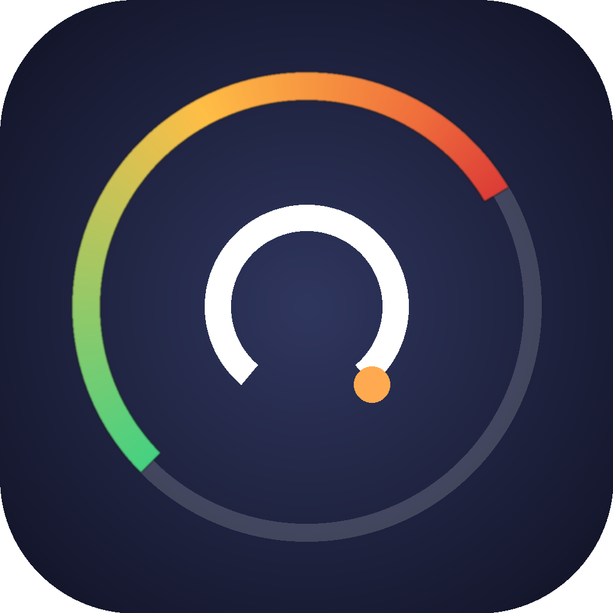

ClaudeStatsA native macOS menu bar app that shows your real Claude Code subscription usage at a glance — with pace-aware indicators, a desktop overlay, usage history heatmaps, and a global hotkey.
macOS 14 Sonoma or later · ~1 MB · Open source (MIT)
A glance at the menu bar tells you if you're burning fast or cruising comfortably. Customizable icons for under, on, and over pace — pick from 30+ options.
Shows the exact same numbers as Claude's own usage page. Real reset countdowns and end-of-window projections — no guessing. Use Codex too? Your ChatGPT plan's Codex limits get their own gauge.
Pin a glass widget to any corner of any screen, with the same ring gauges as the popover and your activity heatmap. Pick its background colour and transparency — always visible, never in the way.
GitHub-style activity grid, 7-day bar chart, and streak tracker. See your usage patterns over the last 90 days at a glance.
Set a keyboard shortcut to open your usage stats from anywhere. No need to find the menu bar icon — just press your combo.
No Dock icon, no telemetry, no analytics. Signs in via Google or email. Your data only goes to claude.ai and, if you use Codex, to OpenAI. Fully open source.
Choose what the menu bar shows (percentage, time to reset, icon only), pick your pace icons, position the overlay, select monitors, enable compact mode, and more.
See how your usage splits across models within each time window — and when a model has its own weekly cap, like Fable, it gets its own ring in the weekly gauge.
One-click updates from within the app. Optionally checks for new versions at startup so you're always on the latest.
Three steps, and you're live.
Download & unzip
Grab the latest release and drag ClaudeStats.app into /Applications/.
First launch
Right-click the app, then Open, then Open in the Gatekeeper dialog. Only needed once (the app is ad-hoc signed).
Sign in to Claude.ai
Click Settings in the popover. Sign in with Google, email, or paste your session cookie manually.